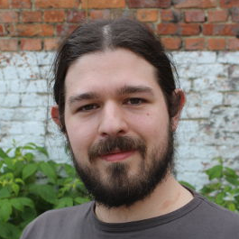

People
PhD Candidates
Daniel Daza
Knowledge Graph Construction through link prediction and text understanding (link).
Dimitrios Alivanistos
Scientific Hypotheses Generation (link).
Vaishali Pal
Task-Based Question Answering (link).
Corey Harper (guest)
Elsevier LABS member and PhD candidate knowledge graph construction from measurement information and tabular data in scientific literature (link).
Xu Wang (guest)
Dataset recommendation (link).
Postdocs
Masoud Mansoury
Reinforcement learning over structured multi-modal information & Bias in Recommendation (link).

Romana Pernisch
Knowledge‐driven query construction (link)
Elsevier Researchers
Payal Mitra
NLP Specialist, Data Scientist at Elsevier (link).
Thom Pijnenburg
Machine Learning Specialist at Elsevier (link).
Katie Scranton
Data Science Lead at Elsevier Health (link).
Maulik Kamdar
Senior Data Scientist and Software Engineer at Elsevier Health (link).
and
Lab Managers

Michael Cochez
Lab Manager and Assistant Professor at the Vrije Universiteit Amsterdam (link).
Philip Tillman
Industry Lab Manager, and Senior Machine Learning Scientist, Research Content Operations, Elsevier (link).
Lab Directors
Rinke Hoekstra
Industry Director and Lead Architect - Knowledge, Elsevier (link).
Paul Groth
Academic Director, and Professor of Algorithmic Data Science at the University of Amsterdam (link).
Frank van Harmelen
Academic Director, and Professor in Knowledge Representation & Reasoning at the Vrije Universiteit Amsterdam (link).
Researchers
Maarten de Rijke
University professor of AI and Information Retrieval at the University of Amsterdam; VP Personalization and Relevance at Ahold Delhaize (link).
Herke van Hoof
Assistant Professor Reinforcement Learning at University of Amsterdam (link).
Georgios Tsatsaronis
Vice President Data Science Research Content Operations , Elsevier (link).